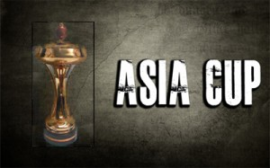

Asia Cup:

As the name says it is just like a world cup restricted to all the Asian countries like India, Pakistan, Sri Lanka, Bangladesh, UAE, etc. It is organised by Asian Cricket Council and was justifyed in the year 1984. It is conducted in various venues alternatively. Hence, it’s been the biggest tournament of the Asian continent so far. It was cancelled 2 times so far due to political reasons and relations among the nations at that time. Hence, this is a restricted world cup tournament for all the Asian countries.
| Year | Winner | Runner-up | Result |
|---|---|---|---|
| 1984 | India | Sri Lanka | India won the tournament 2–0 |
| 1986 | Sri Lanka | Pakistan | Sri Lanka won by 5 wickets |
| 1988 | India | Sri Lanka | India won by 6 wickets |
| 1990–91 | India | Sri Lanka | India won by 7 wickets |
| 1995 | India | Sri Lanka | India won by 8 wickets |
| 1997 | Sri Lanka | India | Sri Lanka won by 8 wickets |
| 2000 | Pakistan | Sri Lanka | Pakistan won by 39 runs |
| 2004 | Sri Lanka | India | Sri Lanka won by 25 runs |
| 2008 | Sri Lanka | India | Sri Lanka won by 100 runs |
| 2010 | India | Sri Lanka | India won by 81 runs |
| 2012 | Pakistan | Bangladesh | Pakistan won by 2 runs |
| 2014 | Sri Lanka | Pakistan | Sri Lanka won by 5 wickets |
| 2016 | India | Bangladesh | India won by 8 wickets |